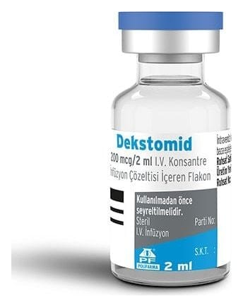

Dekstomid 200 mcg/2 ml I.V. Konsantre İnfüzyon Çözeltisi İçeren FLAKON,2 ml

Ne için kullanılır
KT · Bölüm 1 DEKSTOMİD 5 adet flakon içeren ambalajlarda kullanıma sunulmaktadır. Her flakonda 2 mL konsantre infüzyon çözeltisi içerisinde etkin madde olarak 200 mikrogram deksmedetomidin (100 mikrog/mL) içerir. DEKSTOMİD, berrak ve renksiz bir çözeltidir. DEKSTOMİD’in etkin maddesi olan deksmedetomidin diğer hipnotikler ve sedatifler (uyku vericiler ve sakinleştiriciler) olarak adlandırılan bir ilaç grubuna aittir. Deksmedetomidin hastanelerin yoğun bakım bölümlerinde rahat soluk almaları için solunum yoluna solunum tüpü yerleştirilmiş olan, hastaları sakinleştirmek için kullanılmaktadır. Hastane yoğun bakım ortamlarında yetişkin hastalar için sedasyon (sakinlik, uyuşukluk veya uyku hali) sağlamak veya farklı teşhis veya cerrahi prosedürler sırasında uyanık sedasyon sağlamak için kullanılır.